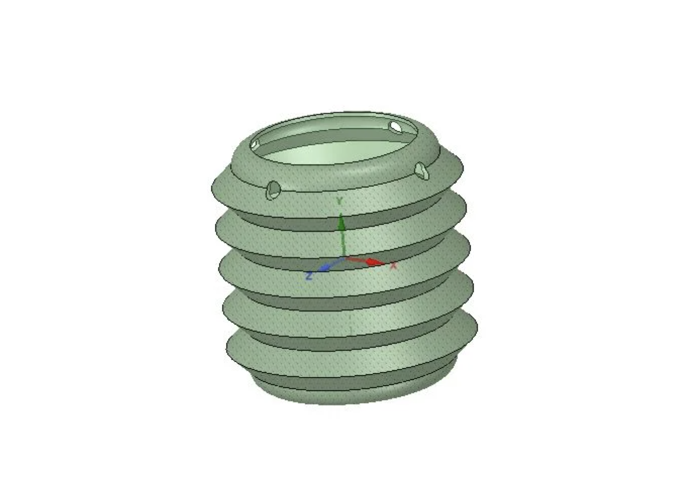
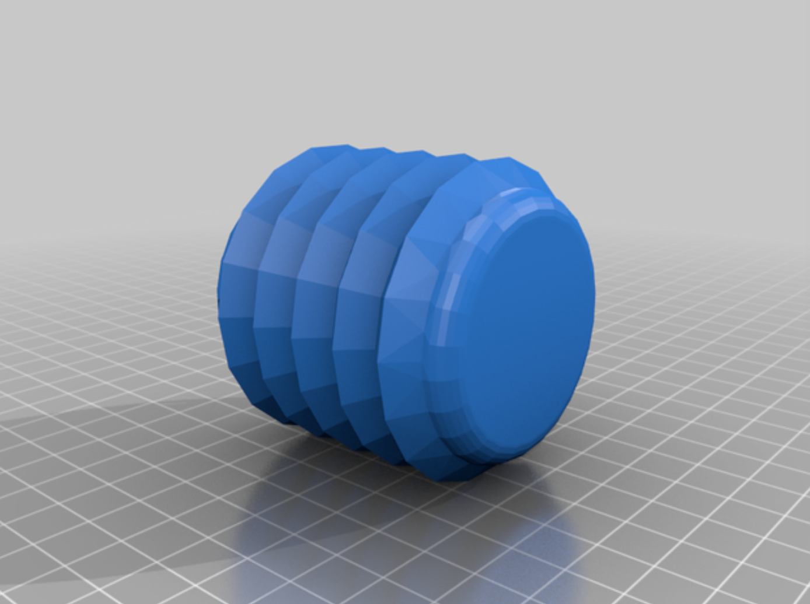
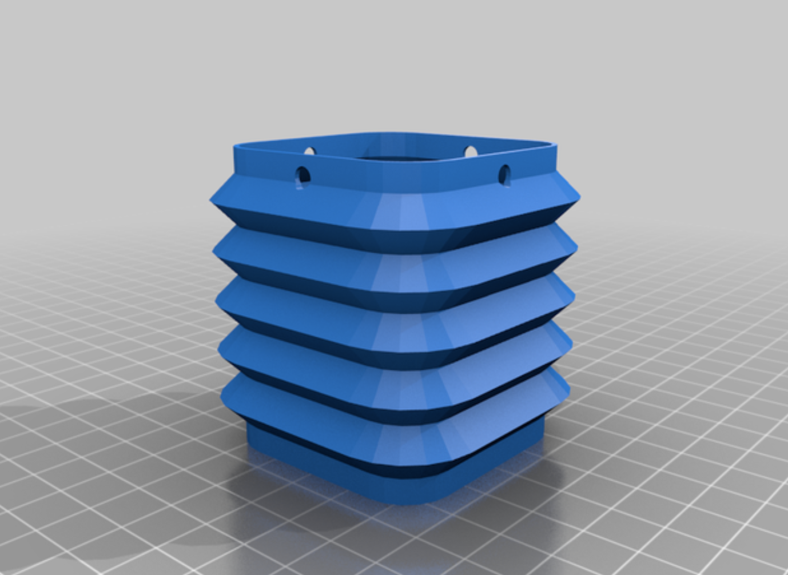
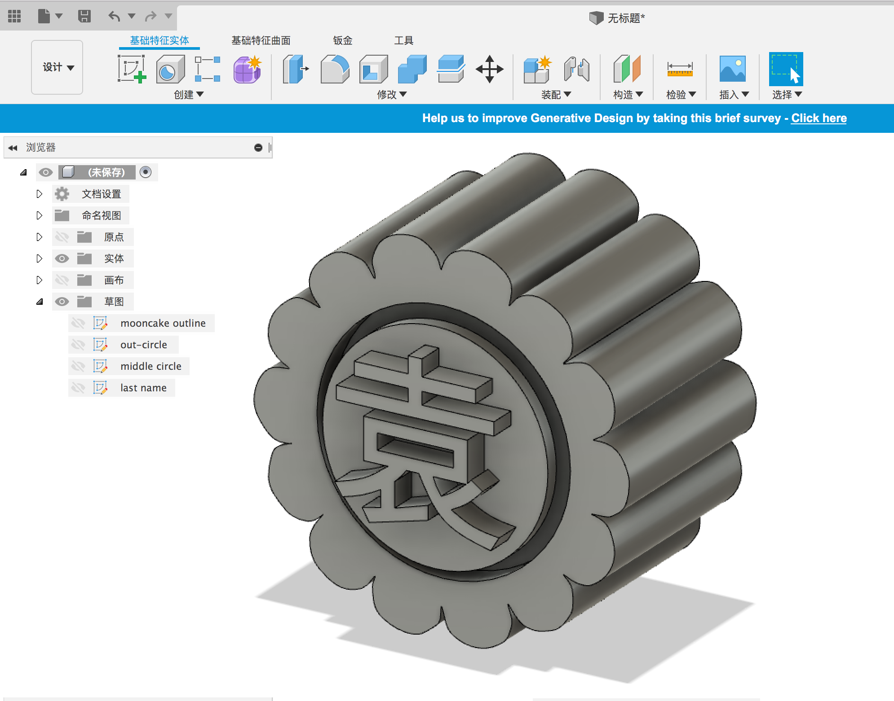
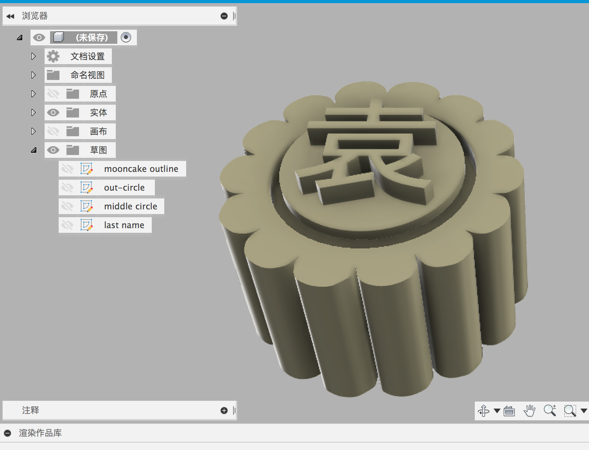
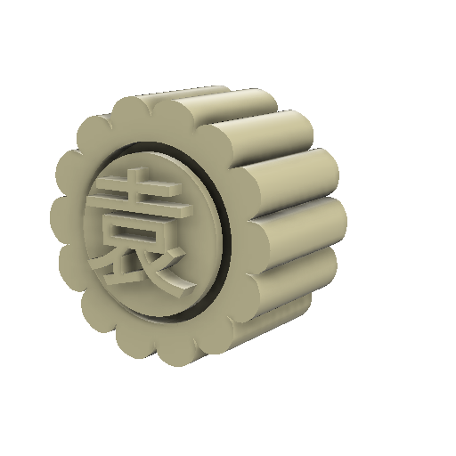
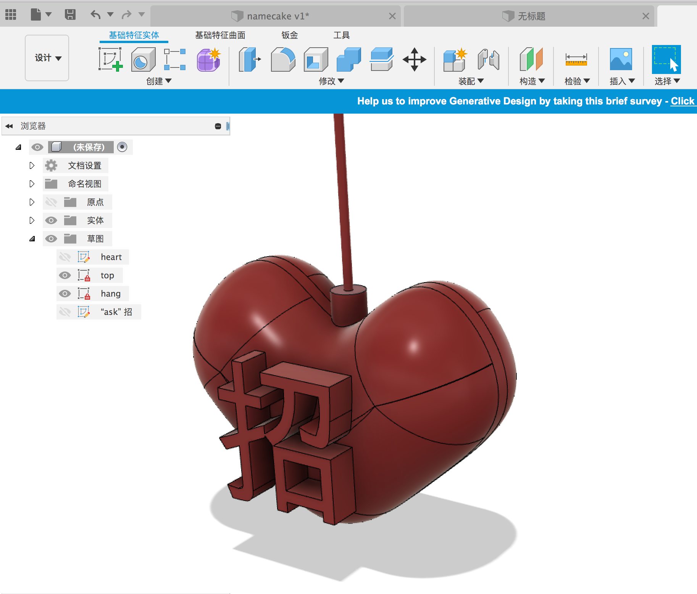
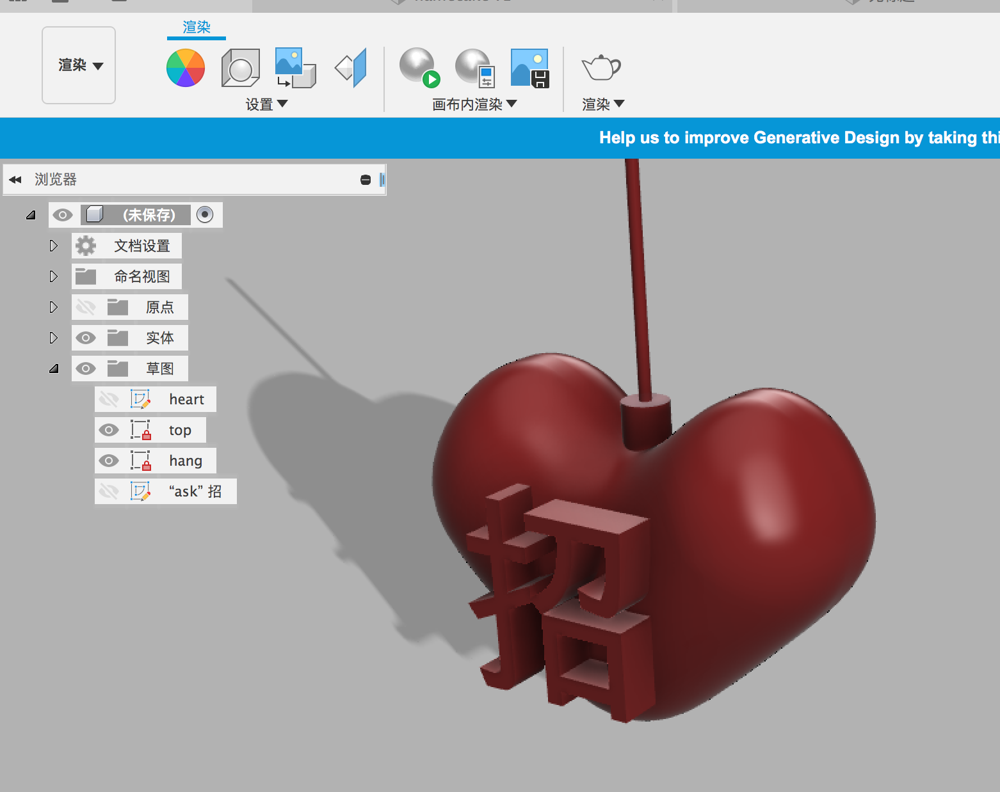
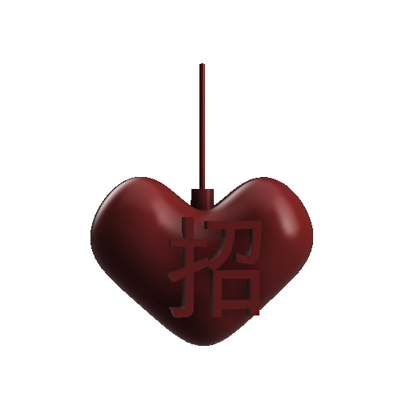

Phase1 -- A Tempest in a Teapot


The Mid-Autumn Festival From the Han Dynasty，China：Mooncake & lanterns
The Mid-Autumn Festival is a traditional Chinese folk festival that originated in ancient times and popularized in the Han Dynasty in China. The Mid-Autumn Festival is derived from the ancient Chinese sacrifice to the moon and is the remnant and derivative of the Chinese nation's custom of offering the moon. Offering the moon is a very old custom in China. In fact, it is a kind of worship activity of the "Moon God" by ancient people in some places in our country in ancient times. During the Mid-Autumn Festival, there are few clouds and fog, and the moonlight is bright. In addition to holding a series of activities to symbolize blessing and reunion, the people should hold moon appreciation, sacrifice the moon, eat moon cakes, and holding lanterns to walk on the street.
A version of Mooncake on Thingiverse.com
https://www.thingiverse.com/thing:3849080
A version of lanterns on Thingiverse.com
https://www.thingiverse.com/thing:3841518
  Story
In a small village in ancient China with a more males population than females. On the eve of the Mid-Autumn Festival, each woman who is looking for a spouse will hang a special lantern in front of her house, so that lets men know there a single lady who is looking for a partner. In order for men to marry the women they want, men need to make mooncakes for the women they like on the Mid-Autumn Festival. However, due to the large number of men who send mooncakes, men need to print their own names on the mooncakes they make, so women know which men make mooncakes. When a woman eats a male moon cake, she accepts the male courtship.
     